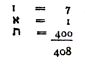
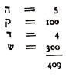
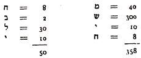
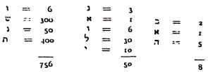
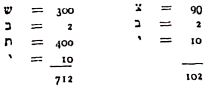
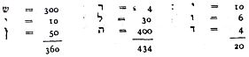
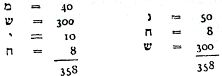
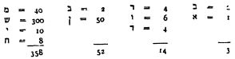

I. BÖLÜM
Kabbala ve Zohar - İsrail peygamberlerine göre Mesihlik düşüncesi - Talmud’a göre Mesihlik düşüncesi - Maymonid’e göre Mesihlik düşüncesi - Kabalist Yahudilerde Mesihlik emareleri - Hıristiyanlarda Mesihlik emareleri - Müslümanlarda Mesihlik emareleri - Halkın saflığında payı olan emareler.
Kabbala ve Zohar
Kabbala ya da sözel gelenek, geleneksel gizemci öğretiler içinde en çok tanınanlardan biridir. Kabalistler, aktardığı açıklamaları tanrısal ve sağduyu ilkeleri ile açıklanamayacak kadar yüksek seviyeli olarak addederler. Tanrı ve evrenin doğası hakkında gizli bir öğretinin varlığına değinirler.
İbrani alfabesinin harfleri Kabbala için önemli bir rol oynarlar. Harflerin, kendi aralarında gizemli ilişkileri, mukaddes bir anlamları ve mistik bir açıklamalarının olduğuna inanılır. Kabbalanın kökenine ilişkin çeşitli fikirler mevcuttur. Kabalistler Kabbalanın dini terminolojide Mişna ve Talmud derlemelerinden önce geldiğine inanırlar. Şahsen, ben daha da önce geldiğini düşünüyorum, zira İstanbul Üniversitesi Eski Çağ Halkları Tarihi Profesörü olmam sebebiyle, Babil-Asur edebiyatında, HezekiGel ve Saint-Jean’ın Apokalipsi kitabındaki bazı pasajlara benzeyen, gizemli bir tarzda yazılmış edebî parçalara rastladım.
Zohar ya da Aydınlık, Pentateukhos’un kabalist bir yorumudur. Kaleme alanın ya da alanların fikirleri ile birlikte içine eski veya yeni eserlerin de girdiği geniş bir derlemedir. Zohar, Yahudi edebiyatının diğer eserleri gibi, özellikle İbrani alfabesi harflerinin değerleriyle, Mesih’in geleceği tarihi bile hesaplar.
Bu hesap Temurya, Gematriya ve Notarya denilen üç işleme dayanır.
a) Temurya, bir sözcüğün harflerinin yerleri değiştirilerek yeni sözcükler meydana getirilmesidir. Böylece, Kiyeleh Malahi Lefaneha ayetinde{10} yani «mon ange marchera devant toi» (meleğim senin önünde yürüyecek) ibaresinde Malaki sözcüğünün harfleri yer değiştirince Mihael yani Michel sözcüğünü oluşturur. Kabalistler, bu hesaba göre bu meleğin baş melek Mihael olduğunu ileri sürerler.
b) Gematriya bir sözcüğü oluşturan harflerin sayısal değerleri toplamıdır{11}.
c) Notarya harflerin evrimidir, diğer bir ifadeyle, bir sözcüğün harflerinin her biri yardımıyla meydana gelmiş yeni sözcüklerin oluşumudur. Böylece, İbrani dilinde Eloul sözcüğünden şu dört sözcük oluşturulabilir, ani, ledodi, vedodi, li.
Kutsal kitabı Zohar olan Kabalistler sağduyulu düşünceden çekindikleri için, onu kabul eden Talmud’u hor görürler. Tanrısallık kavramları, tek tanrıcı bir din olan Yahudi dininin tanrısallık kavramından farklıdır. Tanrının gücünü sınırlayıp Mesih’i yücelterek onu tanrının oğlu olarak görür, hatta onu tanrı yerine koyup, bazen tanrının üç ayrı unsurun bileşiminden oluşan bir bütün olduğunu bile kabul ederler. Böylece, Sabetay da kendine Aeloim, yani “Tanrının oğlu” unvanını verecektir. Ayrıca, tanrı olduğunu, yani: Ani Adelokehem Shabbetaï Tsevi olduğunu da beyan eder. Bunun anlamı şudur «Ben Sabetay Sevi, sizin tanrınızım»
Kabbala, Zohar ve bu eserde formüllerine rastlanacak olan İbrani alfabesinin gizemli sayıları hakkında yeterli fikre sahip olmayan okurlarımıza kolaylık olsun diye bazı ayrıntıları öncelikle veriyoruz{12}.
A - İsrail Peygamberlerine göre Mesihlik Düşüncesi
İsrailli peygamberler Mesihler hakkında vahiy indirmeye gelen doğaüstü varlıklar değillerdir. Onlara göre Mesih’in dünyaya inişi, sadece, çeşitli yerlere dağılmış Yahudilerin, atalarının topraklarına geri dönmesi anlamına gelmektedir. Bu peygamber kavramı, kutsanmış kral demek olan Mesih (Maşiyah) sözcüğünün anlamına tıpatıp uymaktadır.
Peygamberlerin, Mesih çağı için bildirdiklerine ait bazı örnek metinleri aşağıda veriyoruz:
a) O gün gelince büyük boru çalınacak. Böylece, Asur ülkesinde kaybolanlar ve Mısır topraklarına sürgün edilenler Kudüs’teki mukaddes dağda sonsuzluğun önünde yere kapanıp secdeye varacaklar{13}.
b) «Tanrı şöyle konuşur Oğullarımın dağılmış olduğu ulusların bağrından İsrail soyunu geri aldığım zaman, ulusların gözleri önünde kutsallığımı ilan edeceğim ve onlar kulum Yakup’a verdiğim ülkede ikamet edecekler»{14}.
c) «Onları ulusların arasından bulup çıkartıp, dağıldıkları ülkelerden toplayarak, ait oldukları ülkeye getireceğim. Onları İsrail dağlarında, vadilerinde ve ülkenin tüm yerleşim bölgelerinde besleyeceğim»{15}
d) Hezekiyel şiirinin parlak ve alegorik kehaneti Mesih çağını şu şekilde tasvir ediyor:
«Tanrının eli üzerime kondu: Tanrı ruhumu alıp beni kemik kalıntılarıyla dolu bir vadinin ortasına götürdü. Sonra, beni tüm bu kemik kalıntılarının etrafında dolaştırdı; bu vadinin yüzeyinde bu kemiklerden çok sayıda mevcut olduğunu ve tamamen kurumuş olduklarını gördüm. Bana şöyle dedi: İnsanoğlu, bu kuru kemikler yeniden yaşama dönebilir mi? Şöyle yanıtladım: Yüce Tanrım, bunu sen bilirsin. Bunun üzerine bana şöyle dedi: Bu kurumuş kemiklere vahiy yoluyla bildir ve de ki kuruyarak duygudan arınmış kemikler, tanrının sözlerini dinleyin. Böylece, Tanrı bu kurumuş kemiklere şöyle der: Size ruh vereceğim ve tekrar yaşama döneceksiniz. Üzerinizi adale ve etle donatıp deriyle kaplayacağım. Vücudunuza ruh vereceğim, ve yeniden yaşama döneceksiniz, ve benim Tanrı olduğumu bileceksiniz. Aldığım emirleri olduğu gibi vahiy haline dönüştürdüm ve vahiy yoluyla bildirmeye başladığımda bir sarsıntı meydana geldi; daha sonra her taraftan yankılanan bir gürültüyle kemikler birbirine yaklaşıp bir araya gelmeye başladı. Adaleler ve etler oluşmaya başladığında bakakaldım. Bedenleri bir deri kaplamıştı ama henüz bir ruh emaresi yoktu. O zaman bana şöyle dedi; insanoğlu ruha vahiy indir, ve ruha de ki: Tanrı böyle buyuruyor: Ey ruh, gel dört bir yandan esen rüzgarla gel, bu ölülerin üzerine es, es ki yeniden hayata dönsünler. Almış olduğum emirleri olduğu gibi vahiy haline dönüştürdüm. Bedenlerine ruh girdi; yeniden yaşama döndüler ve ayağa kalktılar. Büyük, çok büyük bir ordu oluşturdular. Bana dedi ki: Ey insanoğlu, bu kuru kemikler İsrail halkıdır. Hep bir ağızdan şöyle dediler “Kemiklerimiz kurudu, umudumuz kayboldu, bu hale dönüştük” O halde, vahiy indirerek onlara şöyle de: Tanrı şöyle buyuruyor: Mezarlarınızı açacağım, mezarlarınızın dışına çıkmanızı sağlayacağım, ey halkım, size ruhumu vereceğim ve yeniden hayata döneceksiniz. Size topraklarınız üzerinde, barışın bağrında, yeniden hayat vereceğim ve şunu bileceksiniz ki, tanrınız olan ben, size verdiğim sözü yerine getirmiş olacağım!{16}
e) “Köle edilmiş halkımı geri getireceğim, yağma edilmiş şehirleri yeniden inşa edecekler ve orada oturacaklar. Tekrar üzüm yetiştirecekler ve şarap içecekler bahçeleri ekip meyvelerini yiyecekler. Onları kendi topraklarına tekrar yerleştireceğim ve onlara verdiğim ülkeden bir daha asla zorla ayrı bırakılmayacaklar, diyor Tanrı.”{17}
f) «Köleleri tekrar getirdiğimi gözlerinizle gördüğünüz zaman, o zaman, sizi tekrar getireceğim, o zaman sizi tekrar bir araya toplayacağım, sizi yeryüzünün tüm ulusları içinde övünç ve şerefle donatacağım, dedi Tanrı»{18}.
B. - Talmud’a Göre Mesihlik Düşüncesi.
Talmud, Mesihlik çağına ait değişik düşünceler içerir. Bu düşüncelerin evrensel, ulusal ve mistik özellikleri vardır.
Evrensel nitelikli düşünceler{19}:
a) Berahot antlaşması şöyle der. «Bu dünya ile Mesihlik çağı arasında mevcut olan fark, sadece devletlerin neden olduğu köleleşme sürecidir». Bu cümle, hayatın sosyal koşulların iyileştirilmesi ve sosyal adaletin hâkimiyeti fikirlerini içeriyor. Diğer bir ifadeyle, köleleşme süreci ve zorbalık ortadan kalkınca Mesihlik dönemi gelecektir.
b) «Mesih, ancak para kesesinde para tükenince gelir»{20}. Bu cümle, genel sefaletin neden olabileceği sosyal bir çöküntüyü ve böylece başlayabilecek olan yeni bir çağ düşüncesini ifade eder.
c) «Mesih, ancak Sadukilerin düşüncelerini tüm devletler kabul ederlerse getir»{21}. Bu cümle liberal düşüncelerin dünyadaki zaferini ifade eder.
Ulusal nitelikli düşünceler.
a) «Mesih, ancak İsrail’in bozulan ahlaksız hâkimleri ve polisleri ortadan kaybolunca gelir»{22}. Bu cümle adaletin hâkimiyeti düşüncesini temsil eder.
b) «Mesih, ancak İsrail halkının kibri kaybolunca gelir»{23}. Bu cümle demokrat tabanlı bir toplum düşüncesini ifade eder.
c) «Mesih, ancak İsrail’in iki başkanı çekilip gittiği zaman gelir; bu başkanlar şunlardır: Babil’li exilarque ile Kutsal toprakların nassi adındaki şefi»{24}. Bu cümle açıklamayı hak ediyor. Yahudiler esir olarak Babil’e götürüldüklerinde, kendi aralarında organize olup yönetilmek için exilarque sıfatı ile bir başkan seçerler. Diğer taraftan, Filistin’de kalan Yahudilerin de nassi adında bir başkanı bulunmaktaydı. Görüş ayrılıklarına yer veren bu ikilem Mesihlik ülküsüne erişebilecek olan birliği, ulusal birliği gerçekleştiremez.
Mistik nitelikli düşünceler.
a) «Mesih, ancak vücutta bulunan ruhların tümü tükendikten sonra gelir»{25}. Efsaneye göre, ruhlar, insanlar ve diğer yaratıklar Tanrıya emanet edilir. Mesih’in gelişi ruh stokları tükendiği zaman gerçekleşecektir.
b) «Mesih, ancak hastalara yemek olarak verilmesi gereken balıklar tükendiği zaman gelir»{26}.
C - Maymonid’e Göre Mesihlik Düşüncesi
Doğumunun 8. yüzyılı henüz bu sene kutlanan Maymonid, Tevrat’ın en büyük yorumcusu, Mesihlik çağından bahsederken şöyle der. «Dünya üzerinde hâlihazırda yaşamakta olduğumuz çağ Mesihlik çağıdır; dünya normal seyrine devam etmektedir. Mevcut olan yegâne fark, İsrail’in krallığını yeniden bulacak olmasıdır»{27}. Ayrıca der ki: «Mesihlik çağında eser yaratılırken dünya varlıklarının, yaratılış düzeni değişecek ya da anlaşılması güç şeyler meydana gelecektir sanılmasın. Hayır, dünya normal seyrine devam etmektedir». Meselenin temelinde yatan gerçek, İsrail’in diğer uluslar ile birlikte sakin bir hayat sürdürecek olmasıdır.{28}
D. - Kabalist Yahudilerde Mesihlik Emareleri
a) İzak Lurya’nın öğretilerine göre Kabbalanın başlıca maksadı ruhları Mesih’in gelişine hazırlamak ve kurtuluş çağını hızlandırmaktır. Zohar’ın bir bölümünde bu çağın 5408 yılına tekabül ettiği ilan ediliyordu, yani, Hıristiyanlığa göre 1648 yılında gerçekleşecek demekti. Kabalistlerin bu konudaki düşüncesi, «bu kutsal yılda, hepiniz sahip olduğunuz değerlere döneceksiniz» diyen ve «ZOT (bu sözcük{29} bu anlamına gelir) tamamlanınca, yani 5408 yılında, her biriniz kendi değerine dönecek» cümlesinin ilave edildiği Tevrat{30} ayetine dayanır.
Burada, hesabın tümü ZOT sözcüğüne dayanmaktadır. Bu sözcüğün sayısal değeri şudur.

Kabalistler buna 5000 ilave etmiş ve 1648 yılına tekabül eden toplam 5408 elde edilmiştir ki, bu tarihte Jübil kutlanıyor olacaktır. Bu arada, jübilin kutlanması Mesih’in gelişi ile ilgili olduğundan, o halde Mesih’in 1648 yılında gelmesi gerekir.
b) Kabalist bir biçimde yorumlanmış olan «İşte, Âaron’un tapınağa girişi şöyle olacak» şeklindeki âyette{31} de (burada (işte nasıl) anlamına gelen) ZOT sözcüğü ile 5408 değerini elde ediliyor. Bu arada, başrahip Aaron’un tapınağa girişi Mesih’in gelişi anlamını taşıdığından, Mesih, Hıristiyanlık çağının 1648 yılında geliyor olması gerekir. Diğer bir Kabalist gurubu ise ekdesh (tapınak) sözcüğünün sayısal değerine önem verirler ve Mesih’in geliş tarihini bir yıl sonraya saptarlar. Böylece, şu toplam elde edilir:

c) Bu eserin II. Bölümünde görüleceği gibi, Polonyalı Yahudiler Chmielnicki askerleri tarafından eziyet görmüşlerdir. Kabalist yaklaşıma göre, Mesih’in gelişi, Mesih’in acıları anlamına gelen Hevle Maşiyah adıyla bilinen zulümler ve acılar sonrası gerçekleşecektir. Bunun sayısal değeri şu şekildedir:

Bunun toplamı 408=Zot eder ki bu sayıya 5000 ilave edilince 5408 (1648) toplamı elde edilir.
Not. - 5408 -1648 yılında Sabetay 22 yaşındaydı.
E. - Hıristiyanlarda Mesihlik Emareleri.
Sofu Hristiyanlar, 1666 yılının, Patnos adasında yaşayan Aziz Jean’ın görüşleri doğrultusunda, Mesihlik çağını başlatması gerektiğine inanıyorlardı{32}. Gizemci biçimde yorumlanan bu hayale göre, Yahudilerin Kudüs’e dönüp yeni bir ışıkla aydınlanacaklar ve sonra Hıristiyan dinine geri döneceklerdi.
Aziz Jean’ın hayaline getirilen açıklama, Protestan dininin belirleyici çoğunluğa sahip olduğu yerlerde de halkın dikkatini çekiyordu. Bu olay birçok yerde yankı yaptı. Bir taraftan, Arabistan’ın en uzak köşelerinden gelen ve kaybolan İsrailli on buçuk kabile olduğu sanılan olağanüstü sayıdaki insan yığınından bahsediliyordu. İngiltere’de, gürültü koparan bir olay da, yelkenleri ve halatları ipekten olan ve bandırasında «İsrail’in on iki kabilesi» kelimeleri okunan ve mürettebatı sadece İbrani dili konuşan bir geminin İskoçya’nın en kuzey sahillerinde dolaştığı söylentileriydi. Bu olaylar eski kehanetlerde anlatılanlara o kadar benziyordu ki, inançları çok sağlam olmayanları bile, kısa zaman içinde Yahudilerin yeniden güçlenmesini sağlayacak şaşırtıcı gelişmelerin meydana geleceğine, inandırdı.{33}
F. - Müslümanlarda Mesihlik Emareleri.
«Mehdi{34} Mehmed’in tutuklanıp Sultanın huzuruna çıkartılışı» başlığı altında, Tarih-i-Raşid{35} şunları yazar:
«Bir süre önce, İmadiye kasabasındaki Kürt Tanrıbilim uzmanlarından Şeyh Abdullah adlı birine, ayaklanmaya meyilli kişileri kışkırtan oğlu El-Seyyid Mehmed’i Mehdi ilan etme talebinde bulunulur. Musul beylerbeyi Pehlivan Ali Paşa, İmadiye hâkimi ve çevredeki diğer subaylar onları yakalama emri alırlar. Alınan emir üzerine anılan şeyhin çevresindeki Kürt başkanlarla müzakerelere girilir. Asiler, Padişahın emirlerine itaat etmeyi reddederler ve savaş yetkisi veren bir fetva üzerine dayanamayacaklarını anlayıp hepsi kaçarlar. Yukarıda anılan şeyh Abdullah Musul beylerbeyi tarafından ve oğlu El Seyyid Mehmed Diyarbakır valisi İbrahim Paşa tarafından yakalanıp her ikisi de İstanbul’a getirilir. Sultanın karşısına çıkartılan El Seyyid Mehmed, meseleyle ilgili iddialar nedeniyle sorguya çekilir. Mehdilik iddialarını bütünüyle inkâr eder ve bağışlanmayı talep eden sözler sarf ederek özür diler. Bu sözlerin olgun bir asilzadenin ağzından çıktığını anlayan Sultan onu öldürtmeyi uygun bulmaz. Hazine odasının hizmetkârları arasına kabul edilmesini emreder. Böylece, cezalandırılmak yerine mükâfatlandırılır.»
Not. - Bu olay 1666 yılında meydana gelmiştir ve Sabetay’ın faaliyetlerinin arttığı ve İslâmiyet’i benimsediği sene ile aynı zamana rastlamaktadır.
G. - Halkın Saflığında Payı Olan Emareler.
Sabetay Sevi’yi etkileyen ve aynı zamanda propaganda vasıtası olan yukarıda bahsedilen Kabalist emarelerin haricinde, gerçek anlamları ile kullanıldıklarında hiç bir olağanüstü tarafı olmayan bazı sözcük ve ayetler, tuhaf benzeşmeler ve Kabalistik yorumlar kullanılarak merak uyandırılmış ve halkın saflığından istifade edilerek Sabetay Sevi taraftarlarının sayısı o hızla arttırılmıştır.
İşte bu ayetler ve sözcükler:
a) Oushnat geoule baa, yani «ve benimkilerin kurtarıcılık yılı geldi»{36} şeklindeki âyet şu şekilde sayısal olarak işlenmiştir:

Bunun toplamı 814 yapar.
Shabbetai Tsvi (Sabetay Sevi) sözcükleri aynı hesaplamaya göre şu aynı sonucu verir:

Bunun toplamı ise 814 yapar.
b) Daha aşağıda görüleceği gibi{37}, Sabetay Sevi, hafif meşrepliğiyle tanınan Sara adında bir kızla evlenmişti. Sabetay’ın çevresi bu evliliği doğal kabul etmişti, zira Tanrı, peygamberi Hoşea’ya hafif meşrep bir kadınla evlenmesini söylemişti. «Tanrı ilk kez Hoşea’ya hitap ettiğinde, ona şunu söylemişti: “Git ve gayrimeşru çocukları olan kötü hayat yaşamış bir kadın al”»{38}. Bu âyetten elde edilecek sonuçlar aşikârdır. Mistik güdüler nedeniyle, hafifmeşrep bir kadınla evlenmeyi Hoşea’ya tavsiye etmekle Tanrı, kendi Mesih’ine karşı alışılmamış gibi gözüken bir yaklaşımda bulunmuştur.
c) Yoel peygamber, İsrail’i{39} karşısına alıp Tanrı’nın iyiliklerinden bahsettikten sonra şu ifadeyi kullanmıştır «Bundan sonra, düşüncelerimi tüm canlılara aktaracağım; kız ve oğlan çocuklarınız kâhin olacaklar yaşlılarınız düş, gençleriniz ise hayal görecekler. O gün gelince, hizmetçilerinize ve uşaklarınıza bile, ruhumu ve düşüncelerimi yayacağım. Gökyüzünde ve yeryüzünde mucizeler yaratacağım, güneşin aydınlığı yok olacak, vs.»{40}
Daha ileride görüleceği gibi, kehanet çılgınlığı tüm dünyaya yayıldı. Yoel peygamberin âyetinin (3/1-3) propaganda maksadıyla yorumlanması nedeniyle bu durum meydana geldi.
d) Zebur surelerinde şu âyete rastlanır{41}: «Tanrı’dan bir şey diledim ve onu tekrar arayacağım: Tanrı’dan beni evinde misafir etmesini diledim». İbrani dilinde, “beni evinde misafir etmesini” ibaresinin yerine geçen sözcük chibti sözcüğüdür ve aynı zamanda Sabetay olarak da telaffuz edilir ki, sofulara göre, bundan tanrının evi ile Sabetay arasında bir ilişki mevcuttur.
e) «Yükseğe çıktın, esirleri götürdün» âyeti{42}, Talmud’da{43}, emirleri almak için Musa’nın göğe yükselişi ve vermeyi reddeden meleklerin gösterdiği direnç ile ilgili yorumları içermektedir. Shavita Shevi sözcüğünün harfleri Shabbetai Tsevi (Sabetay Sevi) sözcüğünün harfleri ile aynı olduğundan, aradaki tek farkın Şın ve Tsadik harflerinin sessiz olması nedeniyle gerekirse biri diğerinin yerine geçebileceğinden, Mezamir yazarının Sabetay’ın Mesih olarak geleceğini öngördüğü fikrine Sabetay propagandacıları da katılırlar.
f) Basit bir aşk şiiri olan «İlahiler İlahîsi» dindarlar tarafından çok kutsal{44} addedilir ve sonuç olarak mistikleşir. Oysa «Sevgilim bir ceylana benzer»{45} âyetinde dikkati çeken hiçbir şey yoktur. Ancak, bu âyetin dome dodi lisvi olarak geçen İbrani dilindeki metni, sofuların kurnazlıkta usta olduğunu gösteren bir kaynaktır. Dod-sevgili sözcüğü alegorik bakımdan Tanrı anlamındadır; Svi-Sevi sözcüğü Sabetay Sevi’dir. Sonuç Tanrı Sevi’ye benzer şeklinde bir yorumla karşılaştırır bizleri...
g) İbranî dilinde Tanrı çeşitli şekillerde tasvir edilir ve bunlardan biri “kuvvetli” anlamına gelen Şaday sözcüğüdür. İbrani dilindeki bu sözcüğün üç harfinden her biri bir sözcük oluşturur. Shin harfi şın olarak, haf harfi daleth ve sonuncu harf yud olarak telaffuz edilirler.
Kabalist hesap yöntemine göre toplanınca, bu üç sözcükten şu sonuç elde edilir:

Toplam 814 sayısını verir.
O halde Shaddai = Shabbetai Tsvi yani Tanrı = Sabetay Sevi.
h) Sabetay yüzüğünün taşı üzerine bir yılan şekli kazır. İbrani dilinde yılan nahaş sözcüğüdür ve Kabalistlere göre intikamın sembolüdür. Anahaş ve Maşiyah (Mesih) sözcüklerinin sayısal eşitliğine dayanarak, İsrail’in inançlı halkına eziyet çektiren uluslardan Sabetay’ın intikam alacağı söylenir. O halde:

i) Ribbi Eliezer’e göre “Mesih bir İsmail yanlısı tarafından yok edilecektir”.{46} İsmailciler, Müslümanların, geniş anlamda ise Müslüman olan Türklerin başkanı İsmail’in soyundan gelenlerdir. Kabalistlere göre Sabetay’ın İslamiyet’e geçeceği önceden biliniyordu ve bu ona olan inançlarını kuvvetlendirdi.
j) “David Soyunun Mesih’i geldi” cümlesinin sayısal değeri şudur;

Toplamı 427 yapar. Bu rakam, Hıristiyanlık çağının 1667 yılına uygun düşen İbrani (5) 427 yılına eşittir ve Sabetay’ın 1666 yılında din değiştirip Müslüman olmasından bir sene sonraki yıldır.
Bu örneklerden sonra, Sabetay’ın Mesihlik misyonunun sadece pısırık ve zayıf inançlıları değil aynı zamanda güçlü ruhlarınkileri de sarsması için daha ne gerekiyordu? Çeşitli ülkelerde eziyet çeken ve kurtuluş günlerini sabırla beklerken en küçük bir Mesihlik emaresine bile can atarak sarılan Yahudilerin Sabetay’a olan sınırsız ve kör inançlarının nedenini, açıklamaya çalıştığımız bu olağanüstü mistik rastlantılarda aramak gerekiyor.